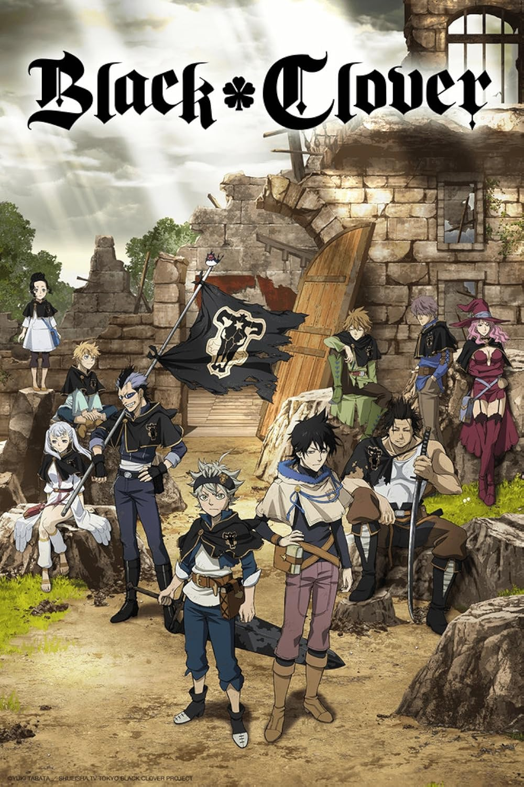

This is the story of a boy named Asta who had nothing and gained it all. Meanwhile his brother Yuno was a born prodigy. Asta was born in a word full of magic, yet he was born without a single drop of magic within himself.
The reason I chose Black Clover is because of how the boy goes from absolute zero to the hero that everyone needed most.
Public Domain
You've reached the bottom of this page!
Would you like to return to Home?
If not you can go to the next pages here:
Chainsaw Man
Solo Leveling
Dragon Ball
One Punch Man